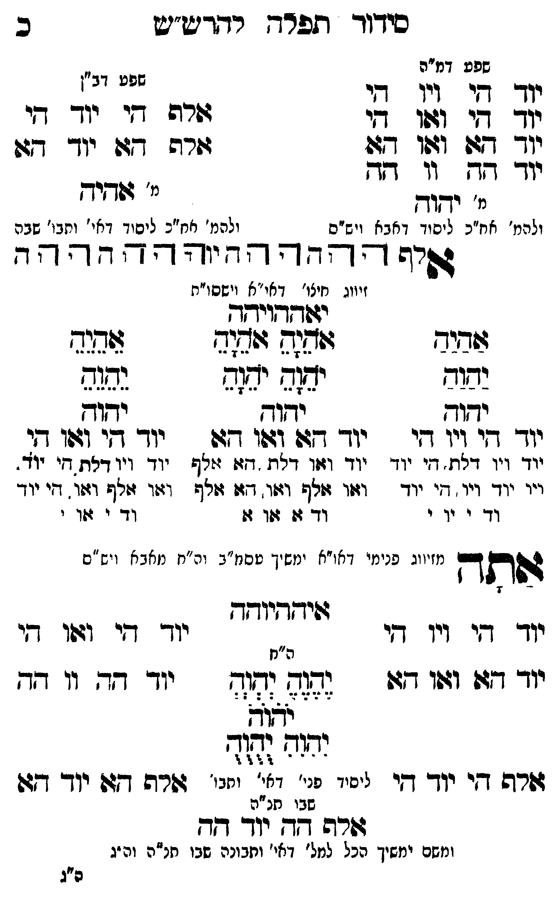

Neue Klartextfassung
=== טבלה === [טור ימין — שפע דמ"ה] יוד הי ויו הי יוד הי ואו הי יוד הא ואו הא יוד הה וו הה [מ' יהוה] [ולכת' חב"ד ליסוד דאבא ויש"ס] [טור שמאל — שפע דב"ן] אלף הי יוד הי אלף הא יוד הא [מ' אהיה] [ולכת' חב"ד ליסוד דאי' ותבו' שבה] === סוף טבלה === אלף ה הה ו וה יה יהוה הההה [זיווג חיצו' דאו"א וישסו"ת] יאההויהה === טבלה === [טור ימין] אַהַיַהַ יַהַוַהַ יהוה יוד הי ויו הי יוד ויו דלת, הי יוד ויו יוד ויו, הי יוד וד י וי י [טור אמצעי] אָהָיָהָ אָהָיָהָ יָהָוָהָ יָהָוָהָ יהוה יוד הא ואו הא יוד ואו דלת, הא אלף ואו אלף ואו, הא אלף וד א או א [טור שמאל] אֵהֵיֵהֵ יֵהֵוֵהֵ יהוה יוד הי ואו הי יוד ויו דלת, הי יוד ואו אלף ואו, הי יוד וד י או י === סוף טבלה === אתה [מזיווג פנימי דאו"א ימשך עסמ"ב ונרנח"י דחכמה ויש"ס] איההיוהה === טבלה === [טור ימין] יוד הי ויו הי יוד הא ואו הא אלף הי יוד הי [טור אמצעי] [ה"ח] יֶהֶוֶהֶ יְהְוְהְ יֹהֹוֹהֹ יִהִוִהִ יֻהֻוֻהֻ [ליסוד פני' דאי' ותבו' שבו חו"ח] [טור שמאל] יוד הי ואו הי יוד הה וו הה אלף הא יוד הא === סוף טבלה === אלף הה יוד הה [ומשם ימשך הכל למל' דאי' ותבונה שבו חו"ח וה"ג]
Original gegen neue OCR · Niqqud für Vergleich ausgeblendet
Original
=== טבלה === [טור ימין —K044-001 שפע דמ"ה]K044-002 יוד היK044-003 ויו הי יוד הי ואו הי יוד הא ואו הא יוד ההK044-004 וו הה [מ' יהוה] [ולכת' חב"דK044-005 ליסוד דאבא ויש"ס] [טור שמאל — שפע דב"ן] אלף היK044-006 יוד הי אלף האK044-007 יוד הא [מ' אהיה] [ולכת' חב"ד ליסוד דאי' ותבו' שבה] === סוף טבלה === אלף ה הה ו וה יה יהוה הההה [זיווג חיצו' דאו"א וישסו"ת] יאההויהה === טבלה === [טור ימין] אהיה יהוה יהוה יוד הי ויו היK044-008 יוד ויו דלת, היK044-009 יוד ויו יוד ויו, היK044-010 יוד וד י ויK044-011 י [טור אמצעי] אהיה אהיה יהוה יהוה יהוה יוד הא ואו הא יוד ואו דלת, הא אלף ואו אלף ואו, הא אלףK044-012 וד א או א [טור שמאל] אהיה יהוה יהוה יוד הי ואו הי יוד ויו דלת, הי יוד ואו אלף ואו, הי יודK044-013 וד י אוK044-014 י === סוף טבלה === אתה [מזיווג פנימיK044-015 דאו"א ימשך עסמ"ב ונרנח"י דחכמה ויש"ס] איההיוהה === טבלה === [טור ימין]K044-016 יוד הי ויו היK044-017 יוד הא ואו הא אלף היK044-018 יוד הי [טור אמצעי] [ה"ח] יהוה יהוה יהוה יהוה יהוה [ליסודK044-019 פני' דאי' ותבו'K044-020 שבו חו"ח] [טור שמאל] יוד הי ואו הי יוד הה וו הה אלף הא יוד הא === סוף טבלה === אלף הה יוד הה [ומשם ימשךK044-021 הכל למל' דאי' ותבונה שבו חו"ח וה"ג]K044-022
OCR · fehlbar
סידך ותפרד רודדט"יט כK044-001 שפע דמ"ה אK044-002 יוד דגיK044-003 ויו די 640 יוך זי וזו -י גזרה דזי יוך די יך 977 (7וו 47: זורה דזה י- דג: יוך דד.K044-004 וו דז גג. ולהמ' אח"כK044-005 ליסוד דאבא ויש"ס ולה' אח"כ ליסיד דאי' וחבי' שבה דרד ד-- - - - - 7 7 - - - ד"- זיווג חיצו' דאי"א וישסו"ת יזפדדאוירחך שדיך שנד ז(ףךש ללל4 ישוש יזש(ד יש( נשגש ידוך יחוץ יזוח יו דזי ויו דזי יוך- ד(ש ובוו גגו יוך זי וזוו דו יו- ויו דלח. . חי יוK044-006 יוד יצוו דלח דזל ז(לףK044-007 יוד זיו דרת (דזי יוד. ייוK044-008 יוד ויו דיK044-009 יוד וזזו זולף וצוו. דז: ציאף וזו זלף וזו. דיK044-010 יוד וד י יוK044-011 י ∅K044-012 וד ז: זו ז:K044-013 וד י 4זוK044-014 י י ימזי דא. "א ינוש י "ב וה ' א ו ש ' גשות- מזיווג פנינזיK044-015 דאו"א ימשי' טסינז"ב וע"ח נזאב א וי ש"ם גפיקדיוחךK044-016 יוד די וי דיK044-017 יוד די ו:וו די ה"חK044-018 יוד דו: וזו 47(. גנ( (ד(ג יוד ד- וו -ד נגש ימוה [זיך דפשרה די יוך קי ליפסידK044-019 פני' דא- יחבי' דזרה דגגו יוך דגוK044-020 שבו תנ"ה דשרה דך יו- וד ומזשכי ימשיךK044-021 הכל למל' דאי' ותבונה שבו חנ"ה וה יג פ"גK044-022